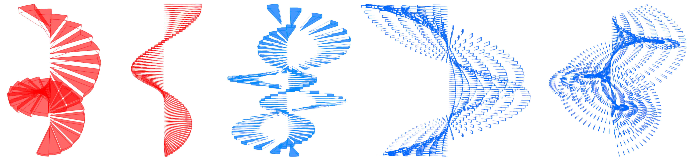

Abstract Spiral Stairs
The geometry consists of multiple cylinder segments, which together form a spiral stairway with a given number of steps. All of these basic elements have the same hight, radius and segment angle. By adjusting the three parameters, the overal shape of the stairway can be defined. Every segment is rotated around the y-axis by the segment angle and moved up in y-direction by the cylinder heigh. In order to generate a more abstract geometry, the steps can also be moved radial from the center by the radius of the cylinder segments. In this way other staircases are created around the original one. In addition every neighbouring spiral stairs twist in different directions to produce an interesting result.
Please explain a bit about the follwing flow-chart that describe your algorithm. The follwing is only a random flowchart as an example.

Please add the instruction for using the app here. For example in this one, you can create control points that build a polygon by double clicking on the plane.